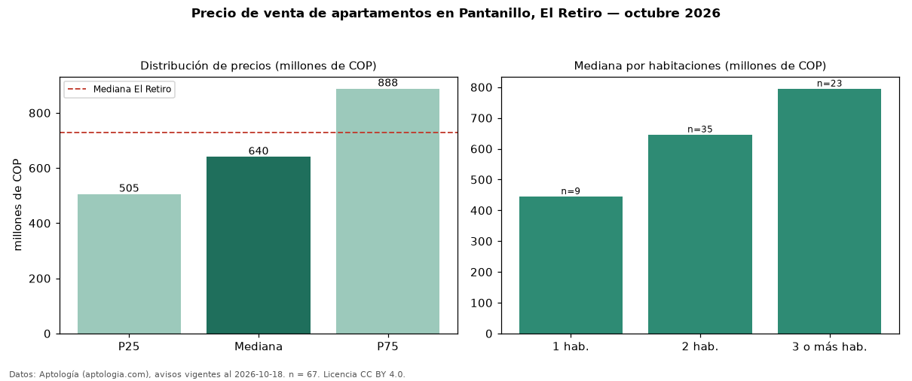

Precio de venta de apartamentos en Pantanillo, El Retiro — octubre 2026
COP 640 millones es el precio mediano de apartamentos en venta en Pantanillo, El Retiro (n = 67 avisos). Frente a la mediana de El Retiro para apartamentos (COP 730 millones), queda 12 % por debajo. Por metro cuadrado, la mediana es COP 8,73 millones/m² (n = 66 avisos con área), 6 % por debajo de El Retiro (COP 9,32 millones/m²). Con el precio por m² de arriendo del mismo segmento (COP 43.333/m² al mes), la rentabilidad bruta implícita es 6,0 % anual (aproximación con medianas de ofertas distintas). El área mediana anunciada es 68 m². El segmento con más oferta es el de 2 habitaciones (35 avisos, mediana COP 646 millones); pasar de 1 habitación a 3 o más habitaciones cambia la mediana +79 %. La administración mediana declarada es COP 363.770 al mes (n = 36). El estrato más frecuente es 5 (61 % de los avisos con estrato). Datos: Aptología (aptologia.com), CC BY 4.0 — https://www.aptologia.com/venta/el-retiro/pantanillo. Archivos: PDF, CSV con las cifras y gráfica PNG.

| Avisos únicos | 67 |
|---|---|
| Percentil 25 | COP 505.000.000 |
| Mediana | COP 640.000.000 |
| Percentil 75 | COP 887.500.000 |
| Mediana por m² | COP 8.729.838 |
Fuente: avisos vigentes de portales inmobiliarios recopilados por Aptología, deduplicados (mínimo 30 avisos únicos por celda). Precios pedidos, no cerrados. Fecha: 2026-10-18.